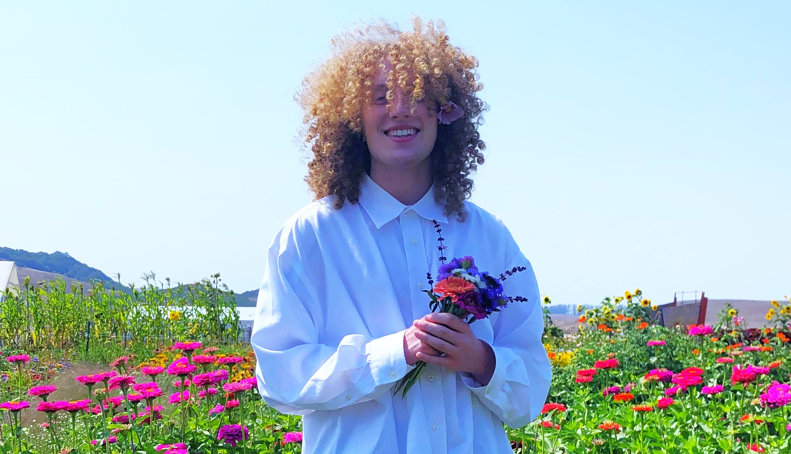

Hello, and welcome! My name is Niko, and I am a Ph.D. candidate in my 6th and final year at the UC Santa Cruz Department of Linguistics. My primary advisor is Ivy Sichel.
I am a theoretical syntactician who studies the syntax and semantics of argument structure, verb decomposition, and locality. I am primarily interested in the following research questions: 1) What are the real grammatical objects/mechanisms that comprise the human linguistic system; 2) how are they best mapped to formal representations, and 3) how to argue empirically for or against the (non-)existence of a given formal object/mechanism and its hypothesized role in the grammar. I am interested in bringing diverse sets of cross-linguistic data to bear on long-standing theoretical questions, and I apply rigorous and creative methodology to my work. I am trained in syntactic theory and (psycho-)linguistic experimental design and execution, and I apply both areas of expertise to address questions on the nature of grammar, the building blocks it is composed of, and its formal organization.
My dissertation (exp. June 2026) investigates the argument structure and morphological composition of nominal and verbal predicates in Korean. I argue for the utility of loanwords as a tool to inform theories of syntax, and its interfaces with semantics and morphology. Specifically, I use loanword data in Korean to make a number of advancements in predicate composition theory, with particular attention to which syntactic heads are responsible for the licensing of internal arguments and the consequential morphological surface forms.
Prior to joining UC Santa Cruz, I received my B.A. in Linguistics from New York University (NYU), with minors in Korean Language and Studio Art. Outside of work, I enjoy crochet, video games, and Argentinian tango.
Office location: STEV 232A (Stevenson College 2nd floor, faculty offices)
Contact: newebste [at] ucsc [dot] edu
저는 한국어를 10년쯤 동안 배워 왔습니다. 앞으로의 꾸준한 연습을 통해서 저의 한국어 능력이 개선되기를 바랍니다. 저의 한국어 문법 실수의 관한 지적과, 실력의 향상을 위한 도움을 감사히 여기고 있습니다.